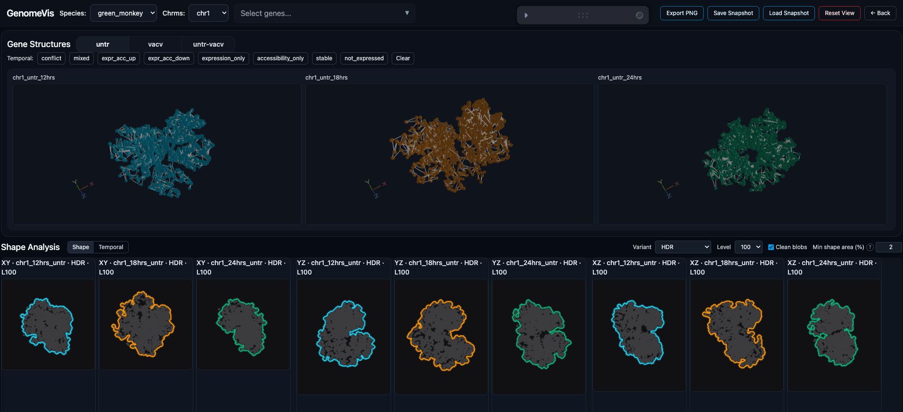

Research System
MPASE Interactive Genome Interface
An interactive multi-view web system for comparative analysis of reconstructed 3D genome structures across conditions and timepoints, combining synchronized 2D and 3D views for structural comparison.
React, Redux, D3.js, Three.js, WebGL, Web Workers